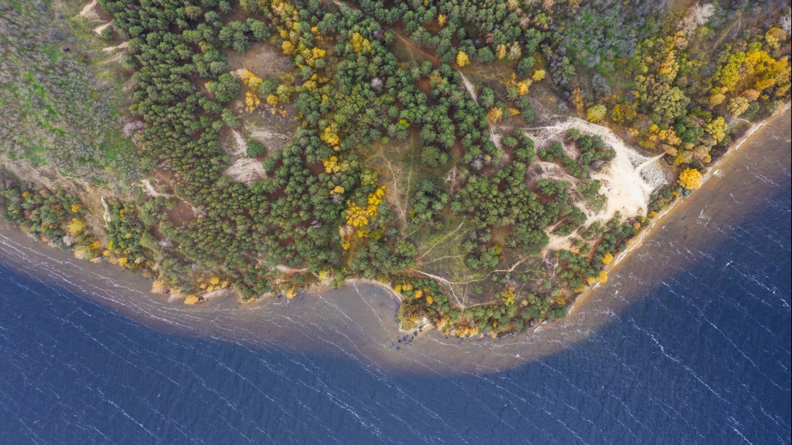
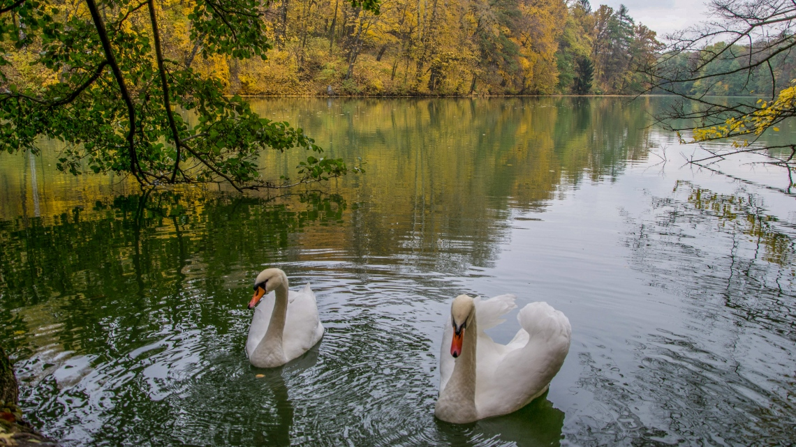
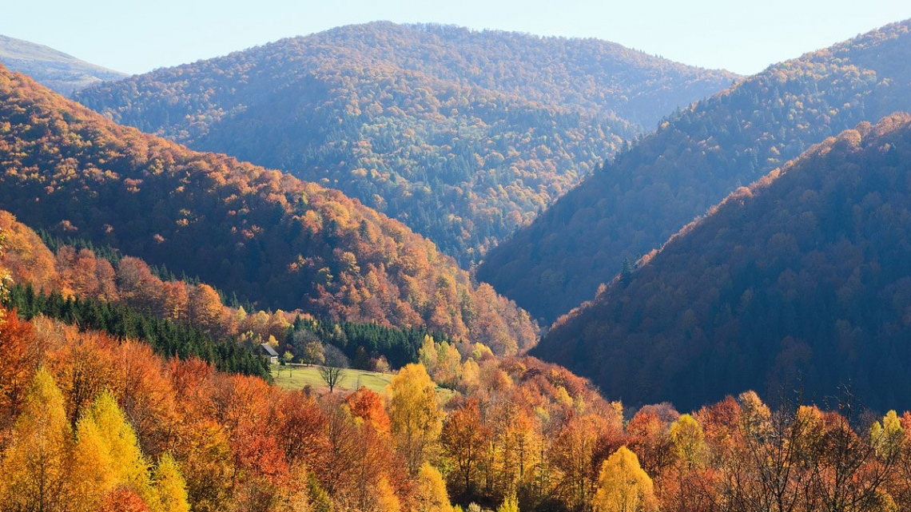
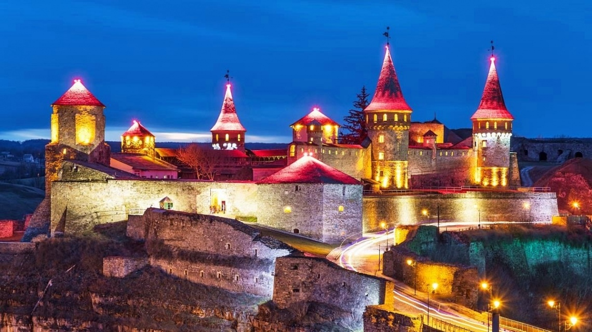
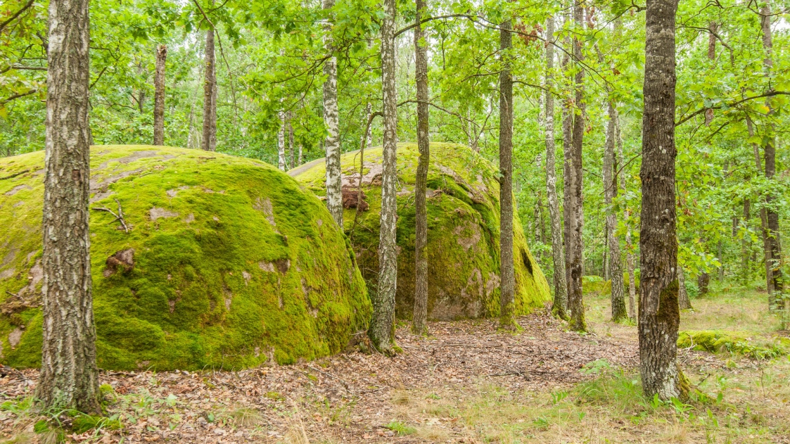

Места силы: легендарный Трахтемиров
Трахтемировский заповедник Черкасской области – одно из самых загадочных мест нашей страны. Оно действительно привлекает таинственностью и красотой. Трахтемиров – старинная духовная столица казаков. Эта местность до сих пор считается священной. Здесь принимались важные решения об обороне земель, здесь изображалось наше будущее, здесь зарождалась вера в непобедимость нашего народа. Во время тура погрузимся в величественную историю украинского казачества, ощутим связь и поддержку поколений, насладимся красотой природы, узнаем силу «мертвой» и «живой» воды согласно «секретному рецепту», попробуем домашних вкусностей и напитков. Это путешествие гарантированно придаст сил и вдохновит еще большей верой и воодушевлением дождаться нашей Победы. Тур для тех, кто любит неспешные пешие прогулки.

Рукотворная Швейцария – самый романтический дендропарк
Посвятите хотя бы один день отдыха и размышлениям. Почувствуйте себя обитателем древнего величественного имения, прогуляйтесь по паркам, покормите лебедей, послушайте удивительные истории о былых временах: о поражающем своим умиротворением старинном Густынском монастыре, о его стенах, хранящих тайны многих знатных родов. Полюбуйтесь изысканной архитектурой имения казацкого полковника и узнайте проклятие казаков-характерников, тянущееся от поколения к поколению… В этом туре переплетаются историческая древность и современность, живописные виды и изысканная архитектура, величественные образы из прошлого и романтические сюжеты, преданность, предательство и немножко мистики. Увлекательная прогулка по самому романтичному дендропарку Украины: Иван Михайлович Скоропадский создал в родовом имении маленькую Швейцарию с «пиками гор», ущельями, мостиками, и населил свою страну удивительными растениями, которых вы нигде больше не встретите. А еще в парке есть специальное место для загадки желаний, которые непременно сбываются.

50 оттенков осени на Закарпатье
Мечтаете о незабываемом и насыщенном отдыхе, с дегустациями, термальными источниками, замками и магическими пейзажами гор? Наш новый гранд тур "50 оттенков осени на Закарпатье" – это идеальный вариант! Во время путешествия вы посетите знаменитый водопад Шипот, подниметесь на гору Гимба и полюбуетесь видами одной из самых красивых и самых горных долин Украинских Карпат — долиной Боржава. Также вас ждет экскурсия по средневековым замкам, которые хорошо сохранились до наших дней. Обзорная экскурсия по Мукачево и Ужгороду и дегустация знаменитого вина с трехсотлетней историей. Для того чтобы ваш отдых стал познавательным, необычным и интересным, не обязательно ехать за границу - можно отправиться в удивительный и колоритный край Украины. И это путешествие будет еще долго возвращаться к вам приятными воспоминаниями.

Новый год по-королевски: Каменец + Черновцы
Вы встречали Новый год в средневековом городе? Под вспышки фейерверков над стенами Старого Замка? В отличном отеле в самом центре Каменец-Подольского? Все это мы предлагаем вам в новогоднюю ночь, а еще - замечательный праздник с угощениями и развлечениями, а также прогулку по одному из красивейших городов Украины - Черновцам, где вы насладитесь величием имперской архитектуры и гостеприимством ароматных кофеен. И в завершение мы посетим две самые красивые крепости Украины Каменец-Подольскую и Хотинскую. Это будет замечательный праздник!

Каменное село – в гостях у хоббитов
Здесь находится украинский Стоунхендж! Археологи называют Каменное село единственным белым пятном на карте Украины. Историки подозревают, что здесь нашел покой князь Игорь, здесь спрятано золото гетмана Полуботка и библиотека князя Ярослава Мудрого. Пчеловоды всего мира мечтают попробовать здесь настоящий бортный мёд. Толкинисты всего мира утверждают, что Толкин писал Вековечный лес именно с Олевского леса. Немцы знают, что село Устиновка ни что иное, как немецкая колония Юстинбург. Христиане верят, что здесь был Бог и именно его следы остались на извечном камне. Оккультисты рассказывают, что здесь живет вся лесная нечисть и ее можно даже увидеть. Охотники и рыболовы приезжают сюда за богатым уловом и охотой. И только тут готовится сказочный мед с пивом. Приезжайте и убедитесь сами, что именно здесь находится таинственное чудо природы – Каменное село, удивительная красота полесской природы и самые добрые люди.
